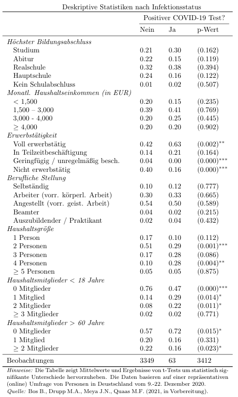

Hauptergebnisse
Die Einkommen entwickelten sich im Jahr 2020 insgesamt besser als die Bevölkerung im März 2020 erwartet hat, allerdings hat die Einkommensungleichheit unter den mehr als 3000 Befragten zugenommen.
Für 2021 erwarten die Deutschen im Durchschnitt steigende Einkommen. Die Mehrheit der Befragten geht davon aus, dass wir noch bis mindestens Anfang 2022 mit nennenswerten Corona-Einschränkungen leben müssen.
Eine Mehrheit in allen Alters- und Einkommensklassen wäre bereit sich freiwillig impfen zu lassen. Allerdings spricht sich eine wachsende Mehrheit gegen eine Pflichtimpfung aus.
Während sich 52% der Befragten striktere Maßnahmen zur Eindämmung des Virus wünschen, finden nur 21%, dass sie zu weit gehen. Im Laufe des Jahres hat diesbezüglich die Polarisierung zugenommen.
Dieser Bericht stellt einige Ergebnisse zu Einstellungen, Verhalten und Erwartungen im Verlauf der COVID-19 Pandemie vor, die wir im Rahmen einer dreiteiligen repräsentativen Panel-Befragung mit mehr als 3000 Personen in Deutschland gewonnen haben. Ende März 2020 nahmen dazu 3.612 Teilnehmer an unserer Befragung teil, Ende August waren es 3.143, und Mitte Dezember 3.437. Wir haben einen Großteil der Teilnehmer mehrmals befragt, und zudem das Panel im August um 685 und im Dezember um 734 neue Teilnehmer ergänzt, um die Repräsentativität für die deutsche Bevölkerung hinsichtlich Bildung, Alter, Einkommen und Geschlecht zu gewährleisten. Jede Erhebungswelle umfasste etwa 50 Fragen sowie zwei ökonomische Experimente. Die Auswertung der Experimente wird zur Veröffentlichung in Fachzeitschriften vorbereitet. Erste Ergebnisse sind bereits publiziert. Mehr Details finden sich in den Voranalyse-Plänen und den zugehörigen Fachpublikationen. (Bos et al. 2020; Quaas et al. 2020).
Zu Beginn der Pandemie (März 2020) haben alle befragten Altersgruppen pessimistischere Erwartungen an die Einkommensentwicklung für 2020 gehabt, als diese im Durchschnitt tatsächlich eingetreten sind (Dezember 2020).
Es gab in allen Einkommensgruppen sowohl Einkommensverluste als auch Einkommenszuwächse gegenüber 2019. Dennoch scheint im Pandemiejahr 2020 die Einkommensverteilung ungleicher geworden zu sein: Wenn sich das Einkommen verändert hat, dann ist es tendenziell geschrumpft für Haushalte mit einem geringen Einkommen, dagegen aber eher gestiegen für Haushalte mit einem hohen Einkommen. Bei den Einkommenserwartungen für 2021 ergibt sich ein ähnliches Bild.
Im Dezember 2020 erwarten mehr als die Hälfte der Deutschen, dass im zweiten Halbjahr 2021 oder im ersten Halbjahr 2022 wieder ein Leben ohne nennenswerte Einschränkungen durch die Corona-Pandemie möglich ist. Insgesamt erwarten 45% der Befragten, dass ein Alltag ohne nennenswerte Einschränkung durch Corona bis Ende 2021 oder früher möglich ist. Eine Rückkehr zur „Normalität“ bis Ende 2022 erwartet eine große Mehrheit von 85% der Befragten.
Um ein detailliertes Bild zu erlangen, haben wir die Impfbereitschaft auf einer erweiterten Skala erhoben. Dies zeigt: In allen Altersgruppen erklären mehr als 50%, dass es mindestens „gut möglich“ ist, dass sie sich freiwillig impfen lassen. Die Impfbereitschaft hat im Dezember 2020 gegenüber August 2020 abgenommen: Während im Dezember im Durchschnitt 68% der Befragten angeben, sich freiwillig impfen lassen zu wollen („gut möglich“ oder höhere Zustimmung), waren dies im August noch 72%. Der Rückgang der Impfbereitschaft ist besonders ausgeprägt bei Befragten, die jünger sind als 40 Jahre. Bei den über 60-Jährigen hat die Impfbereitschaft kaum abgenommen und etwa 80%, geben an, es sei zumindest „gut möglich“, dass sie sich freiwillig impfen werden.
Gliedert man die Impfbereitschaft nach Einkommen, zeigt sich eine höhere Bereitschaft bei höheren Einkommen.
Seit August 2020 hat in allen Altersgruppen die Zustimmung zu einer verpflichtenden Impfung abgenommen. Im Dezember 2020 lehnt eine Mehrheit in allen Altersgruppen eine Impfpflicht ab. Der Anteil derer, die eine Impfpflicht befürworten, ist größer in höheren Altersgruppen. Im Dezember 2020 haben fast ein Drittel (32%) eine verpflichtende Impfung gegen das Coronavirus strikt abgelehnt. Im August war nur weniger als ein Viertel (23%) der Befragten grundsätzlich gegen eine Impfpflicht.
Anhaltend befolgt ein Großteil der Bevölkerung die Vorschriften zum Tragen eines Mund-Nasen-Schutzes sowie zur Reduktion von Kontakten. Im Dezember 2020 gaben 85% der Befragten an, ihre Kontakte mindestens so viel zu reduzieren wie vorgeschrieben. Fast die Hälfte (48%) ging bei der Reduzierung sogar über die Vorschriften hinaus. Zudem geben 89% an, einen Mund-Nasen-Schutz mindestens da zu tragen, wo er vorgeschrieben ist. Die freiwillige Beschränkung von Kontakten über die Vorschriften der Regierung hinaus ist im Dezember wieder höher als im August, allerdings nicht so hoch wie während der ersten Welle im März 2020. Ebenso ist der Anteil derer, die einen Mund-Nase-Schutz häufiger trägen als vorgeschrieben mit 55% im Dezember gegenüber 41% im August gestiegen. Es zeigt sich beim Tragen des Mund-Nasen-Schutzes vor dem Hintergrund strengerer Regeln auch eine Spaltungstendenz: Neben dem Anteil derer, die häufiger einen Mund-Nasen-Schutz tragen als vorgeschrieben, ist auch der Anteil derer gestiegen, die zugeben, sich nicht an die Vorschriften zu halten. Konstant geblieben ist die Motivation, Schutzmaßnahmen zu ergreifen. Das tun die Befragten nur zur Hälfte aus Selbstschutz. Genauso wichtig ist es den Befragten, andere zu schützen. Vor allem die Jüngeren unter den Befragten ergreifen Schutzmaßnahmen auch aus dem Grund, Freunde und Familie sowie auch andere Menschen zu schützen.
Eine breite Mehrheit gibt an, dass die jeweils gegenwärtigen Maßnahmen der Regierung zur Eindämmung der Pandemie zumindest angemessen sind. Im März 2020 war die Zustimmung recht einheitlich über die Altersgruppen verteilt: aus Sicht der Befragten waren die Maßnahmen nicht ausreichend. Im Dezember variierte die Zustimmung substanziell mit den Altersgruppen. Während 33% der unter 30-jährigen die Maßnahmen zu weit gehen, sind es bei den über 60-jährigen nur 12%. Zudem hat die Polarisierung zugenommen: Während im März 2% (13%) der Befragten die Maßnahmen „viel zu weit gingen“ („bei Weitem nicht ausreichten“), so waren dies im Dezember 2020 8% (17%). Wohingegen im März noch 31% angaben, dass die Maßnahmen gerade „angemessen“ sind, waren dies im Dezember 2020 nur noch 21%.
Im Dezember gaben 63 Befragte an, sie seien positiv auf das SARS-CoV-2 Virus getestet worden. Trotz der geringen Anzahl zeichnet sich tendenziell ab, dass Infizierte häufiger einer Vollzeitbeschäftigung nachgehen und häufiger in größeren Haushalten mit Kindern, aber seltener mit Personen über 60 Jahren zusammenleben.

Zugehörige FachpublikationenBos, Björn, Moritz A. Drupp, Jasper N. Meya, and Martin F. Quaas. 2020. “Moral Suasion and the Private Provision of Public Goods: Evidence from the COVID-19 Pandemic.” Environmental and Resource Economics 76 (4): 1117–38. https://doi.org/10.1007/s10640-020-00477-2.
Quaas, Martin F., Jasper Meya, Hanna Schenk, Björn Bos, Moritz A. Drupp, and Till Requate. 2020. “The Social Cost of Contacts: Theory and Evidence for the COVID-19 Pandemic in Germany.” CESifo Working Paper No. 8347. Munich. https://www.cesifo.org/en/publikationen/2020/working-paper/social-cost-contacts-theory-and-evidence-covid-19-pandemic-germany.
Kontakt
Björn Bos
Institut für Volkswirtschaftslehre, Universität Hamburg
Mail: bjoern.bos(at)uni-hamburg.de
Prof. Dr. Moritz Drupp
Institut für Volkswirtschaftslehre, Universität Hamburg
Mail: moritz.drupp(at)uni-hamburg.de